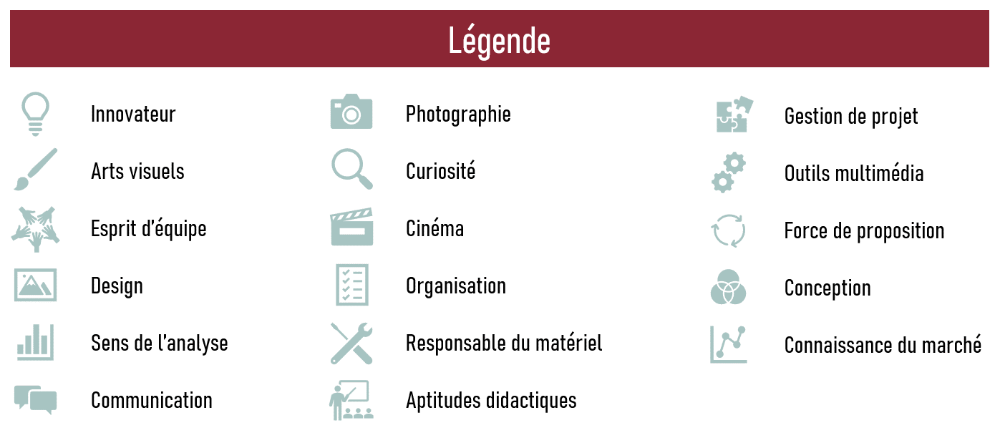

PROFOLIO est un prototype d’un site web permettant de trouver des candidats idéals selon leurs compétences et leurs expériences indiquées dans leur portfolio. Pour y parvenir, l’internaute peut avant tout naviguer sur la page d’accueil. À la manière du fonctionnement de l’application de rencontre Tinder, l’employeur/collaborateur a la possibilité de choisir le candidat qui l’intéresse le plus. Il peut ainsi se référer au nom du candidat, à son secteur d’activité, à sa région ou à ses compétences premières. À la suite de la sélection du profil, l’internaute a accès à davantage d’informations sur l’utilisateur, dont son curriculum vitae, une sélection de ses créations et, plus important encore, ses réseaux de contacts. C’est notamment grâce à cette chaîne de réseautage que les candidats pourront améliorer leur visibilité professionnelle. Pour mieux comprendre les symboles utilisés, voici une brève légende.
Tous des profils sont bien évidemment fictifs. L’objectif de ce projet est de démontrer les diverses formes et possibilités qu’un tel concept peut offrir. En effet, il y a de nombreuses fonctionnalités qui pourraient être apportées afin de rendre le tout plus attrayant et pratique.